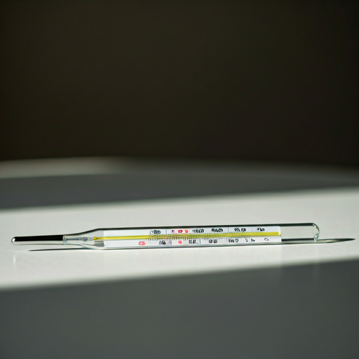

マッチング中
10/24
頭痛の症状が続いています。市販薬で様子を見ても良いでしょうか？
3日前から偏頭痛のような痛みが続いており、ロキソニンを服用していますが改善しません。光に敏感になっています...
visibility
閲覧 12
3日前から偏頭痛のような痛みが続いており、ロキソニンを服用していますが改善しません。光に敏感になっています...
東京都内でアトピー性皮膚炎の治療に定評のある皮膚科をご存知の方がいらっしゃれば教えてください。ステロイド以外の治療法も...
夜間に子供が高熱を出した場合の対応について相談です...